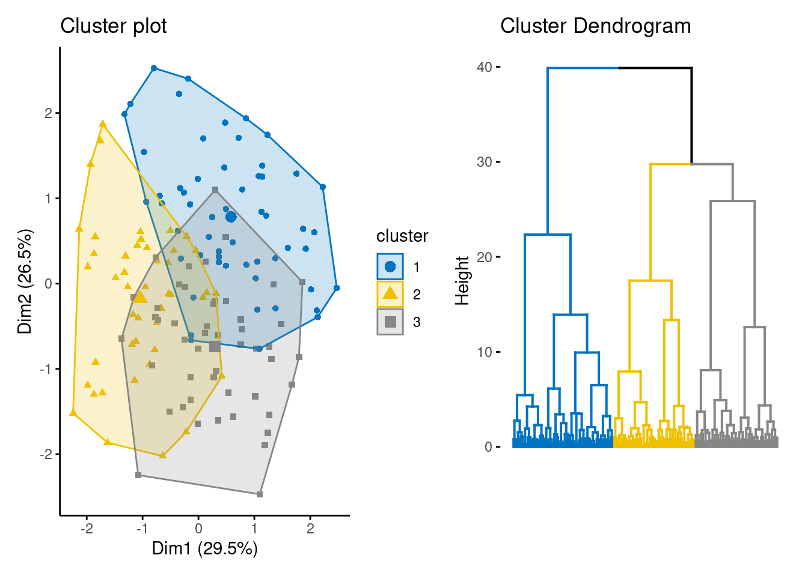

Capítulo 6 Evaluación de clusters
Este análisis es considerado como la evaluación de factibilidad de implementar análisis de clustering. Antes de aplicar cualquier técnica de clustering vale la pena evaluar si el conjunto de datos contiene clusters naturales significativos (i.e. estructuras no aleatorias) o no. En caso de que sí existan estructuras conglomeradas naturales, se deberá proceder a identificar el número de clusters a extraer.

6.1 Tendencia de factibilidad
A diferencia de otros tipos de análisis, una desventaja que tiene el análisis de clustering es que en todo momento regresarán clusters incluso cuando los datos no contengan tal estructura, por lo que si ciegamente se implementa un método de clustering, este dividirá los datos en clusters debido a que es lo esperado a realizar. las librerías usadas en R serán factoextra y hopkins.
head(iris, 5)## Sepal.Length Sepal.Width Petal.Length Petal.Width Species
## 1 5.1 3.5 1.4 0.2 setosa
## 2 4.9 3.0 1.4 0.2 setosa
## 3 4.7 3.2 1.3 0.2 setosa
## 4 4.6 3.1 1.5 0.2 setosa
## 5 5.0 3.6 1.4 0.2 setosadf <- iris %>% select_if(is.numeric)
random_df <- df %>%
apply(2, function(x){runif(length(x), min(x), max(x))}) %>%
as_tibble()
df_scaled <- scale(df)
random_df_scaled <- scale(random_df)Se comienza con una evaluación visual sobre los datos para evaluar la significancia de los clusters. Debido a que los más probable es que los datos tengan más de dos dimensiones, se aprovecha el análisis de componentes principales para representar los datos en un espacio de dimensión menor.
library(patchwork)
iris_plot <- fviz_pca_ind(
prcomp(df_scaled), title = "PCA - Iris data",
# habillage = iris$Species, palette = "jco",
geom = "point", ggtheme = theme_classic(),
legend = "bottom"
)
random_plot <- fviz_pca_ind(
prcomp(random_df_scaled), title = "PCA - Random data",
geom = "point", ggtheme = theme_classic(),
legend = "bottom"
)
iris_plot + random_plotPuede observarse en el primer gráfico que, al menos existen 2 clusters significativos, con posibilidad de que sean 3. A diferencia del gráfico de la derecha que no muestra una tendencia en la estructura conglomerativa.
Es sumamente importante realizar esta evaluación porque
set.seed(13528)
km_res2 <- kmeans(random_df_scaled, 3)
cluster_plot <- fviz_cluster(
list(data = random_df_scaled, cluster = km_res2$cluster),
ellipse.type = "convex", geom = "point", stand = F,
palette = "jco", ggtheme = theme_classic()
)
den_plot <- fviz_dend(
hclust(dist(random_df_scaled), method = "ward.D"), k = 3, k_colors = "jco",
as.gplot = T, show_labels = F
)
cluster_plot + den_plot
Puede observarse que ambos métodos imponen una segmentación a los datos que son uniformemente aleatorios y que no contienen ninguna segmentación natural. Por esta razón, siempre deberá realizarse este análisis previamente y elegir si se desea proceder con el análisis.
El método anterior fue totalmente gráfico. Se procede a continuación a mostrar una metodología estadística para determinar la factibilidad de implementar análisis de clustering.
El estadístico Hopkins es usado para evaluar la tendencia de clustering en un conjunto de datos. Mide la probabilidad de que un conjunto de datos dado sea generado por una distribución uniforme. En otras palabras, prueba la aleatoriedad espacial de los datos. Por ejemplo, Sea D un conjunto de datos real, el estadístico de Hopkins puede ser calculado de la siguiente forma:
Proceso:
Muestrear aleatoriamente n puntos \((p_1, p_2, p_3, ..., p_n)\) de D
Para cada punto \(p_i \in D\), encontrar su vecino más cercano \(p_j\); luego calcular la distancia entre \(p_i\) y \(p_j\) y denotarla como \(x_i = dist(p_i, p_j)\)
Generar un conjunto de datos simulado \((random_D)\) tomado de una distribución uniformemente aleatoria con n puntos \((q_1, q_2, q_3, ..., q_n)\) y de la misma variación que la original del conjunto D.
Para cada punto \(q_i \in random_D\), encontrar su vecino más cercano \(q_j\) en D; posteriormente, calcular la distancia entre \(q_i\) y \(q_j\) y denotarla como \(y_i=dist(q_i, q_j)\).
Calcular el estadístico de Hopkins como la distancia media más cercana de vecinos en los datos aleatorios y dividirlos por la suma de las distancias medias de vecinos más cercanos de los datos reales y aleatorios:
\[H=\frac{\sum_{i=1}^{n}{y_i}}{\sum_{i=1}^{n}{x_i} + \sum_{i=1}^{n}{y_i}}\]
Un valor cercano a 0.5 significa que \(\sum_{i=1}^{n}{y_i}\) y \(\sum_{i=1}^{n}{x_i}\) son similares uno del otro y por lo tanto, D es distribuida aleatoriamente.
Por lo tanto, las hipótesis nula y alternativa son definidad como sigue:
Hipótesis Nula: El conjunto de datos D es uniformemente distribuido (sin clusters significativos).
Hipótesis Alternativa: El conjunto de datos D no es distribuido uniformemente (contiene clusters significativos).
Cuando el estadístico de Hopkins tiene valores cercanos a cero, entonces puede rechazarse la hipótesis nula y concluir que el conjunto de datos D tiene datos conglomerables significativos.
library(hopkins)
set.seed(19735)
1 - hopkins::hopkins(df_scaled, nrow(df_scaled)-1, 4)## [1] 0.005107394Este valor sugiere rechazar la hipótesis nula en favor de la alternativa.
Por último, se compararán otros 2 gráficos con la disimilitud de los dos conjuntos de datos. La metodología de este gráfico lleva por nombre “Visual Assessment of Cluster Tendency” (VAT). Este método consiste de 3 pasos:
Calcula la matriz de disimilaridad (DM) entre objetos usando la distancia Euclidiana.
Reordena la DM de forma que los elementos similares estén cercanos unos de otros. Este proceso crea una Matriz de Disimilaridad Ordenada (ODM).
La ODM es mostrada como una imagen de disimilaridad ordenada, la cual es la salida visual de VAT.
dis_irirs_plot <- fviz_dist(
dist(df_scaled),
show_labels = FALSE) +
labs(title = "Iris data")
dis_random_plot <- fviz_dist(
dist(random_df_scaled),
show_labels = FALSE) +
labs(title = "Random data")
dis_irirs_plot + dis_random_plotDonde:
Rojo: Alta similaridad
Azul: Baja similaridad
La matriz de disimilaridad anterior confirma que existe una estructura de cluster en el conjunto de datos Iris, pero no en el aleatorio.
La técnica VAT detecta la tendencia de clustering de forma visual al contar el número de bloques cuadradas sobre la diagonal en la imagen VAT.